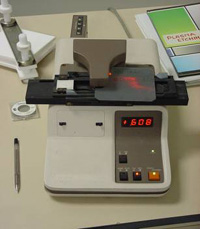

A four-point probe tester is shown in the figure below. It is able to measure the sheet resistivity of a layer of semiconductor material. The sheet resistivity is defined as being the resistivity of the material divided by the thickness of the layer being measured. For example, a 1 ohm cm resistivity wafer that is 330 microns thick will have a sheet resistivity of 30 ohms per square.

Figure: 4-point probe tester for measuring the sheet resistivity of a layer
To make measurements, the four in line probes are brought into contact with the surface of the layer whose sheet resistivity is to be measured. The outer two probes then feed a specific current into the layer being measured while the central two probes measure the voltage difference that appears between those two corresponding points on the layer surface. The lower the sheet resistivity, the higher the conductivity and hence the lower the voltage being formed between these inner two probes. A simple mathematical expression can be derived that relates to the geometry of these probes and facilitates the calculation of the sheet resistivity directly as a function of the voltage measured between the inner two probes (for a given current flowing between the outer two probes).
This test is particularly useful following the formation of the emitter through phosphorus diffusion. It gives a direct measure as to the sheet resistivity of this emitter and therefore the corresponding resistive losses to be expected in finished devices resulting from the lateral flow of collected carriers within this layer that must travel to the silver metal contact to flow from the device. It is also a direct measure of the amount of phosphorus that has been diffused within the emitter. What this test does not measure, however, is the difference in doping profile that may exist between two samples that have the same sheet resistivity. For example, it is possible to have a sheet resistivity of 30 ohms/square using a very heavily phosphorus doped layer that is only a fraction of a micron thick. In comparison, it is also possible to achieve a sheet resistivity of 30 ohms/square using a substantially lower phosphorus doping concentration provided the thickness of the layer is quite a bit greater.
In preparation for this test, it is often necessary to remove the diffusion oxide chemically to facilitate good contact between the four probes and the silicon surface. With textured surfaces, it may be possible to make these measurements without removing the diffusion oxide due to the relative ease of contacting the points of the pyramids. Caution, however, needs to be exercised as excessive pressure can lead to damage to the pyramid peaks or just as importantly, contamination of the pyramid peaks from the metal comprising the probe tester (usually osmium). In an undiffused wafer, this test can be used to measure the sheet resistivity of the wafer itself. When this value is multiplied by the thickness of the wafer, the resistivity of the wafer material can be determined. When the surface of the wafer is diffused with dopants of the opposite polarity to the substrate material, the current from the probes is confined to the surface region by the semiconductor junction. It is therefore just the sheet resistivity of the diffused surface (normally the emitter) that is determined and in most cases this is unaffected by the underlying substrate doping.